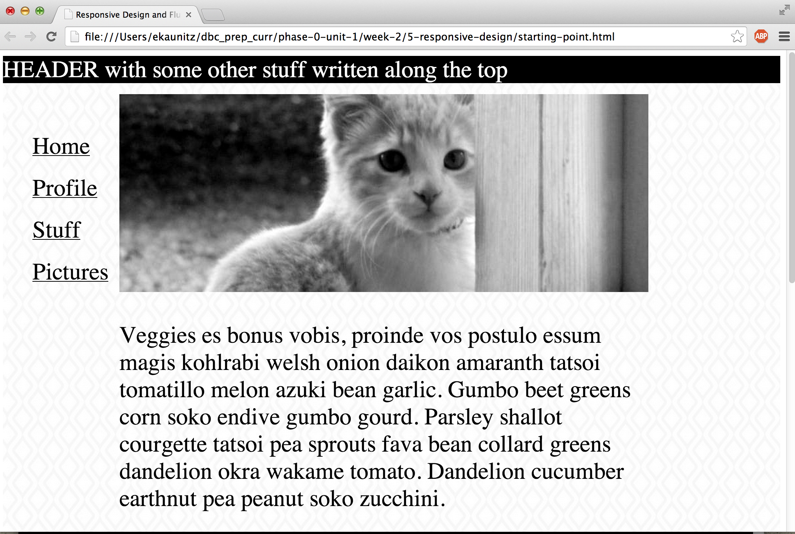

MEG MAKES
Drinking from the web development fire hose at Dev Bootcamp.
Tech talk: responsive web design.
August 17, 2014
As the popularity of mobile phones and tablets continues to rise, it is becoming increasingly common for users to view web content somewhere other than on their computer. Each new device seems to come with different screen dimensions and ensuring that a page displays properly on each of these screens, regardless of their size, presents a new challenge for web designers. As a user, there’s nothing worse than trying to read an article on your iPhone and having to constantly scroll to the right because the line of text extends beyond the width of the screen. Enter responsive design.
With responsive design, pages are designed and optimized for viewing across multiple different screen sizes. I will be able to read that article on my iPhone without having to scroll to the right. The page will detect my screen size and will adjust the width of the text column accordingly. Images will be resized to fit properly in the screen, and the layout of the page could change as well. There is plenty of room to fit a navigation bar on the side of a page when viewing it on your desktop browser, but this would be too crammed with the limited width of a mobile screen so the navigation bar would likely be moved up above the main content when viewed on a smaller screen. For a deeper dive into the principles of responsive design, check out Ethan Marcotte’s article on the topic.
For our second pairing challenge of the week, we were tasked with taking a basic webpage (see image below) and optimizing it for viewing across desktop, tablets, and mobile phones. My pair and I chose to use 480px for the mobile screen, 768px for the tablet screen, and anything larger than 768px for the desktop version.
You can see our final product here. Play around with the dimensions of the browser and notice how the layout changes with the width. We’ve changed the color of the header for each different screen size: green for the desktop version, yellow for tablet, and blue for mobile.
The layout of the original website was done in pixels rather than percentages so when you adjusted the width of the screen, the text and images would continue off to the right of the screen forcing the user to scroll rather than automatically adjusting as they do now. For the tablet version we slightly reduced the size of the header and left navigation bar, which seemed a bit overbearing on the slightly smaller screen. The biggest change to the layout came with the mobile version. As mentioned above, the mobile screen is too narrow to have a navigation bar alongside the main content of a page so we moved it from the left side of the page to sit right under the header and above the main content on the page.